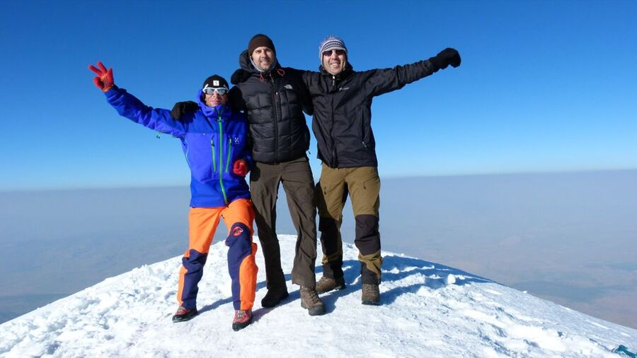

Geziler
▲
2025 ve Ekim 2026
Chris @ Likya
Yeşim ile Türkiye'nin güney kıyısında Likya Yolu'nda – 2. etap Patara, Aperlai ve Kekova üzerinden Kaş'a, kapanış Fethiye'de.
3 yürüyüş günü25,4 km

Nisan/Mayıs 2022
Chris @ Himalaya 2.0
Everest Ana Kampı'na ikinci trekking turu, bu kez Yeşim ile – Kala Patthar ve Cho La Geçidi üzerinden Gokyo'ya.
14 gün132,8 km5.609 m

Temmuz 2011
Chris @ Ararat
Ahmet ve Harald ile Türkiye'nin en yüksek dağına – iki kamp üzerinden Ağrı Dağı'nın zirvesine.
7 gün5.137 m

Eylül/Ekim 2009
Chris @ Himalaya
Ralf ile ilk tur: Gokyo ve Cho La Geçidi üzerinden Everest Ana Kampı'na ve Kala Patthar'a.
13 gün5.550 m